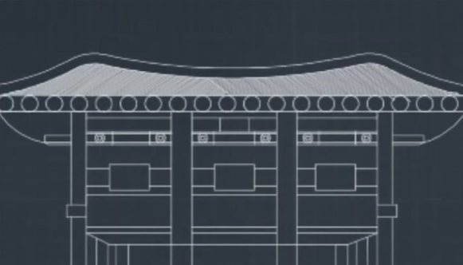

분과
CAD
2학기 계열기초과목인 AutoCAD과목을 조금더 이해하고자 만들어진 CAD분과는 Rapport전원이 분과생으로 들어와있습니다. 사용가능한 실습실의 컴퓨터가 많지않아, 주로 지천관 622호에서 실시하며, 도면그리기, 유용한 기능공유등 여러가지 활동을 하고있습니다. △ AutoCAD로 만든 사고의 모습
영어
주 1회 약 2~3시간으로 이루어져있는 영어분과는, 분과장 이주형과 분과생 6명으로 이루어져있습니다.
영어를 듣고 쓰는 형식으로 되어있으며, 영어실력을 향상시키기위해 서로서로 노력하고있습니다.